Incidentally: you can also see this evidence that IRV hurts racial minorities (as compared with plain plurality voting). I have no idea whether that phenomenon is related to the one we shall describe here.
For each of the pictures below, there are 14 candidates (small circles). Each pixel represents an election. The blue pixels are the region where the blue candidate wins an election for voters distributed 2D-normally centered at that pixel (and similarly for other colors).
Each normal distribution is rotationally symmetric with σx=σy=70, and each picture is 200x200 pixels. This distribution was chosen for simplicity. Results would be qualitatively the same for any reasonable alternative distribution of voters.
In each picture, the coordinates of the 14 candidates were chosen randomly from the 150×150 centered subsquare. They are simply the first 112 random numbers output by my random generator. Pictures produced by IEVS 3.24.
The idea behind these pictures is that candidates and voters are distributed in a 2-dimensional "issue space" (in reality there are many more dimensions, most of which are not controversial) and voters prefer candidates whose stances on the two issues are close to their own, e.g. closer in Euclidean distance. There is no need to label the axes and the length units are arbitrary (and moving 1 pixel away horizontally or vertically implies distance=1).
Voters prefer candidates closer to them. All voters vote honestly. The pictures in the top row are the hypothetical optimum voting system, which always elects the best possible candidate for society (maximizing summed utility, utility being a decreasing function of voter-candidate distance). They look quite sensible; the purple candidate-circle is sitting in the middle of a purple-win region, and similarly for other colors, i.e. if the voters lie nearest the purple candidate, they tend to elect him. That makes sense. The corresponding pictures in the bottom row, which look a good deal crazier, are IRV (Instant Runoff Voting).
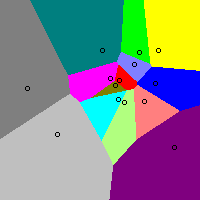 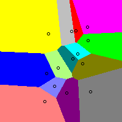 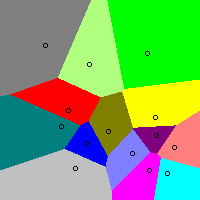 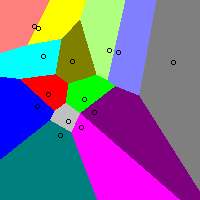Observations:
Some people have objected that they consider politics to be largely "one dimensional" from "left" to "right," not two dimensional. The below pictures were created in the same way as the above ones except there are 5, not 14, candidates and the candidates are random points in a 150×15 rectangle (i.e. almost a straight line), not a 150×150 square. Again the top row in each group shows the best winner, and the bottom row shows what IRV yields.
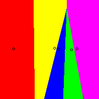 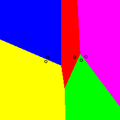 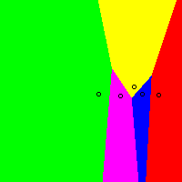 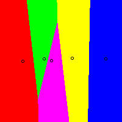And here are some more:
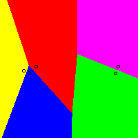 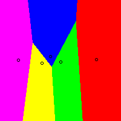 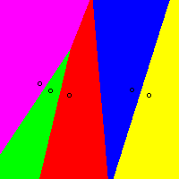 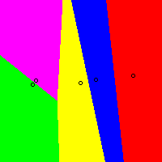Again, IRV often "zeros out" candidates – although not as often as in the 2D scenarios above; 10% of them are zeroed in the 1D scenarios here, versus about 50% in the 2D scenarios. And when it does so, the victims again tend to be "centrists." Again, random-dottiness and weird-shaped (including apparently disconnected) regions are common with IRV. (Actually, more than 10% are zeroed out if you only look at the region of the pictures near the centerline; that view also engenders more "tough-call" elections.)
Similar pictures for many other voting systems (e.g. Approval voting has a pro-centrist bias, the opposite of IRV's pro-extremist bias).
{kind=link}